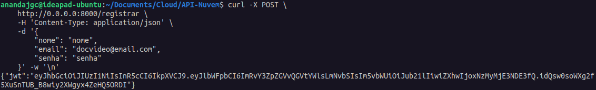
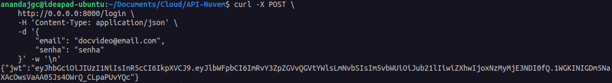
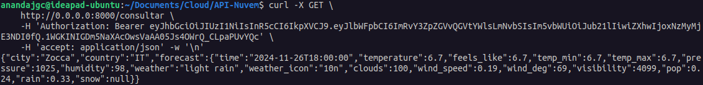

Projeto de API RESTful com FastAPI
Sumário
- Descrição do Projeto
- Funcionalidades Implementadas
- Estrutura do Código
- Como Executar a Aplicação
- Usando a API
Descrição do Projeto
Este projeto é uma API RESTful desenvolvida com FastAPI para realizar o cadastro e autenticação de usuários e consultar dados meteorológicos da API OpenWeatherMap. A aplicação é composta por diversas funcionalidades, incluindo registro de usuários, autenticação via JWT (JSON Web Token), e consulta de previsões do tempo.
Funcionalidades Implementadas
1. Registro de Usuários:
- Endpoint:
POST /registrar - Recebe dados do usuário como parâmetros:
{
"nome": "string",
"email": "string",
"senha": "string"
}
- Verifica se o email já está registrado.
- Hash da senha utilizando bcrypt.
- Armazena o novo usuário no banco de dados e retorna um token JWT:
{
"jwt": "string"
}
2. Autenticação de Usuários:
- Endpoint:
POST /login - Recebe email e senha do usuário como parâmetros:
{
"email": "string",
"senha": "string"
}
- Verifica as credenciais e autentica o usuário.
- Retorna um token JWT para acesso autorizado:
{
"jwt": "string"
}
3. Consulta de Previsão do Tempo:
- Endpoint:
GET /consultar - Requer um token JWT válido:
Authorization: Bearer token_de_usuário
- Faz uma requisição à API OpenWeatherMap utilizando as coordenadas especificadas.
- Formata e retorna os dados da previsão do tempo:
{
"city": "string",
"country": "string",
"forecast": {
"time": "string",
"temperature": "number",
"feels_like": "number",
"temp_min": "number",
"temp_max": "number",
"pressure": "number",
"humidity": "number",
"weather": "string",
"weather_icon": "string",
"clouds": "number",
"wind_speed": "number",
"wind_deg": "number",
"visibility": "number",
"pop": "number",
"rain": "number",
"snow": "number"
}
}
Estrutura do Código
1. Importações e Configurações:
- Carrega variáveis de ambiente (chave secreta, URL do banco de dados, chave da API do OpenWeatherMap).
- Configura a conexão com o banco de dados usando SQLAlchemy.
2. Definições de Modelos:
User: Modelo Pydantic para validação de dados de entrada de usuários.Login: Modelo Pydantic para validação de dados de login.UserDB: Modelo SQLAlchemy para representar a tabela de usuários no banco de dados.
3. Funções de Utilidade:
create_token: Cria um token JWT com dados do usuário e um tempo de expiração.verify_token: Verifica e decodifica um token JWT.get_db: Gerencia a sessão do banco de dados.
4. Endpoints da API:
registrar: Registra um novo usuário.login: Autentica um usuário existente.consultar: Consulta a previsão do tempo após verificar o token JWT.
Como Executar a Aplicação
1. Pré-requisitos:
- Docker
2. Configuração:
- Crie um arquivo
.envna raiz do projeto e defina as seguintes variáveis:
SECRET_KEY=sua_senha
DATABASE_URL=postgresql://user:password@db:5432/dbname
OPENWEATHERMAP_API_KEY=sua_chave_api_openweathermap
POSTGRES_USER=user
POSTGRES_PASSWORD=password
POSTGRES_DB=dbname
3. Execute a aplicação com Docker Compose:
- O arquivo compose.yml pode ser encontrado
aqui.
docker compose up -d
- Após isso você pode acessar a documentação em
http://0.0.0.0:8000/docs
Usando a API
registrar:
curl -X POST \
http://0.0.0.0:8000/registrar \
-H 'Content-Type: application/json' \
-d '{
"nome": "seu_nome",
"email": "seu_email",
"senha": "sua_senha"
}' -w '\n'
login:
curl -X POST \
http://0.0.0.0:8000/login \
-H 'Content-Type: application/json' \
-d '{
"email": "seu_email",
"senha": "sua_senha"
}' -w '\n'
consultar:
curl -X GET \
http://0.0.0.0:8000/consultar \
-H 'Authorization: Bearer seu_token_jwt_aqui' \
-H 'accept: application/json' -w '\n'
Vídeo Exemplo
Imagens Exemplo
- Registrar:

- Login:

- Consultar:
